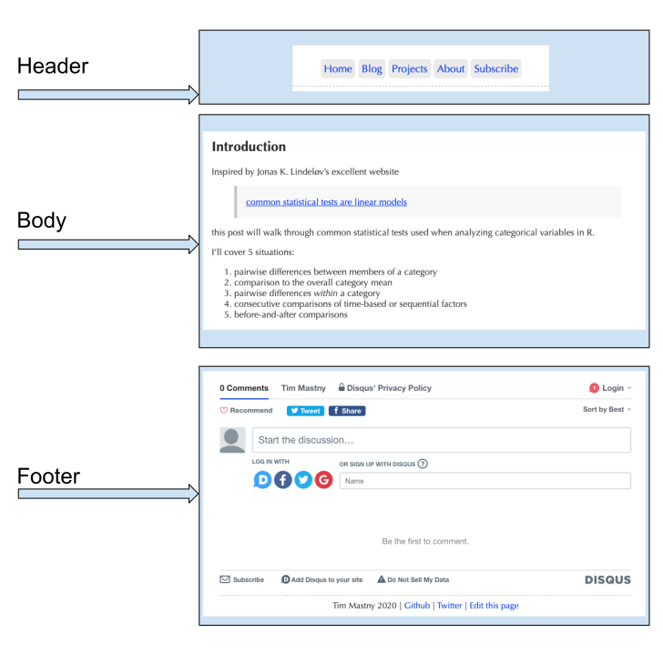

Hugo appeals to writers, data scientists, and programmers, because of the focus
on content. You don’t need to know html or CSS to write a post. In fact,
you get to use familiar formats like markdown
or RMarkdown, to interweave your writing
with code, figures, and equations.
For web developers, Hugo offers a customizable framework to create websites with reusable templates. Websites like tidyverse.org and ropensci.org, which manage blogs with many contributing authors, are able to use templates to make it easy for authors to submit posts.
There are three components to a website:
Hugo Themes and tools like blogdown are perfect for the writer, programmer, or data scientist who wants to start to start blogging. They let the blogger use familiar formats like markdown or RMarkdown, to interweave writing with code, figures, and equations. No html or CSS experience required.
The next stage of customization is styling. This is using html and CSS to change colors, shapes, and fonts of the website, tailoring it to your desire
But what about the data scientist, like me, who doesn’t have much experience with the web. What does Hugo actually do, and why should I care? Hugo’s answer to What is Hugo states
In technical terms, Hugo takes a source directory of files and templates and uses these as input to create a complete website.
which is all true, but doesn’t really help me grasp to overall conceptual purpose of Hugo.
To explain Hugo in non-technical terms, let me introduce Master Chef Hugo! Chef is opening the kitchen doors, and showing how it works behind the scenes.
and clarified two key objectives that Hugo offers tools to solve: page and list creation. I hope this article provides some clarity to you as well!
When I was first started to customize my website, I struggled to understand what Hugo was at a conceptual-level. While Hugo has excellent technical documentation, it many ways it kinda assumes you already know what Hugo does. The
, especially in R data science, because you can focus on the content, and not be distracted or overwhelmed by web-design or front-end development. Posts are written in familiar formats like markdown or RMarkdown, letting you easily combine text, code, and figures.
can be written in . Or you can use blogdown or hugodown to compile RMarkdown right into a blog post, including all your code and figures. This magic lets writers, programmers, and data scientists focus on writing without being overwhelmed with web-design and front-end development.
The saying goes, you don’t want to learn how to sausage is made, but this time is an exception: Hugo is a Master Chef who would love to invite you into the kitchen. If you’ve ev
The utensils are clean and well-documented, and the recipes are fun to follow. We’ll go over what Hugo does to build a webpage, and how Hugo maintains a menu of the latest blog posts.
Why learn about Hugo? If you’ve ever wanted to customize your website, it will help to understand what Hugo does and how it can help you. Ideally, you’ll feel more confident making changes, and maybe take a stab at customizing your theme.
A restaurant needs food and websites need content. With Hugo and Hugo Themes, you can focus on writing the content, while Chef Hugo makes the rest of the dish.
While the content is the most important part of the page, there are other pieces of information and iconography on a website. In general, there are 3 sections to a webpage. I’ve used an example from my own website below:

The body is your blog post. All the words, images, and code you want to share
with the world. It’s converted into what you see from your *.md or *.Rmd
source.
The header and footer sandwich the body with other relevant information. In my case, the header is the connection to the rest of my website, with links to my home, blog, and projects. The footer contains things that go at the end, like comments and additional links off-site.
Headers and footers also serve a purpose in web-development. Yihui Xie has an instructional PR on syntax highlighting showing that styling (CSS) goes in the header, and JavaScript goes in the footer.
Chef Hugo is responsible for combining these ingredients into an actual webpage:

The recipe Chef follows is found in the theme, and is constructed with Hugo Templates. Once again, Yihui Xie has another good example in this snippet of code:
{{< highlight "html" "style=pastie,hl_lines=1 10 14,linenos=true" >}} {{ partial "header.html" . }}These 14 lines of code make up the hugo template hugo-xmin uses to create a webpage. Lines 1, 10, and 14 are where the real action happens. These lines tell Hugo to insert the body between header and footer to complete the sandwich.
The cool part is Hugo doesn’t tell you how to make your website.
Starting with a template like this, you can modify it any way you’d like!
And it’s really fun with blogdown::serve_site: you can see your changes
happen almost in real-time.
Modifying your existing theme is a great way to learn about Hugo and web-design.
My own website theme
evolved from Yihui’s instructional theme.
TODO: compare to a different single format to show you can vary this theme.
As a Master Chef, Hugo knows some people want to make more than one sandwich; they want a whole menu to build a restaurant.
The same is true for a blog: you’ll need a menu show-casing all your posts so people can find and read them. I have two “menus” on my website.

Menus, posts, pages: at the end of the day they are all lists. Hugo knows you need it, so they offer list templates. These are the instructions to find all your posts (sandwiches) and list them all in one place (a menu).

Diving into the list template
for my own theme, you can see that it’s fundamentally powered by a for loop:
The homepage, like the blog post in the last section, is still a webpage,
so it’s sandwiched by the header and footer on lines 1 and 20.
range on line 10 how the list is made. It loops through all the pages
in $paginator.Pages and inserts the html providing the date, title, and link
to the blog post.
Hugo provides all the tools to create lists anyway you desire. You can include or exclude sections or individual posts. I’ve even extend it to create a two-column list that you see on my homepage.
In truth, this article is just the appetizer. There’s a lot to learn about Hugo, but making simple changes to templates in existing themes is a great way to get started.
Credit goes to Yihui’s instructional Hugo Theme. His suggestion to study the theme if you want to learn more about Hugo and blogdown is true. He left breadcrumbs throughout the project to help you understand all the technical details. I used his theme for a long time, until I got the urge to customize it and found myself learning Hugo. Also Hugo’s excellent documentation provides comprehensive coverage of all the functions and parameters, as well as many examples to learn from and tweak.